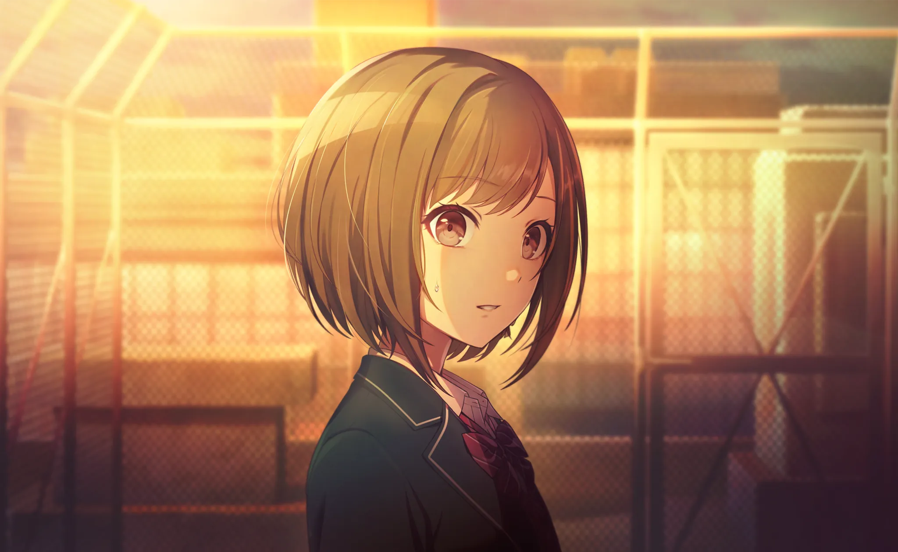
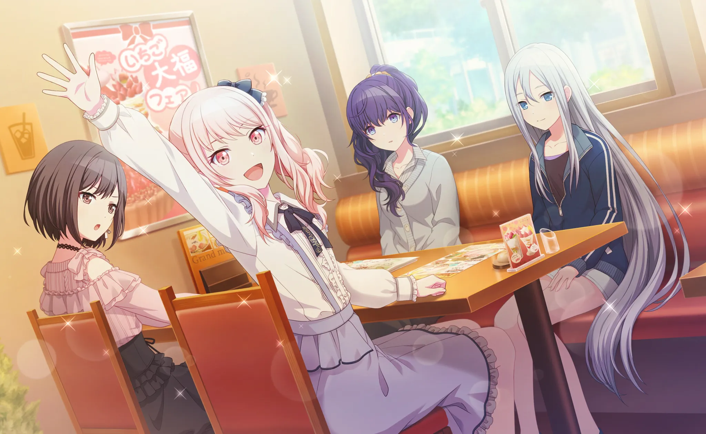
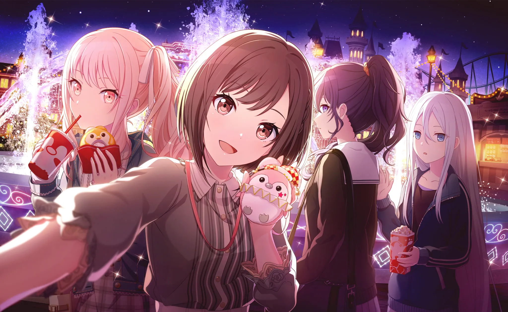
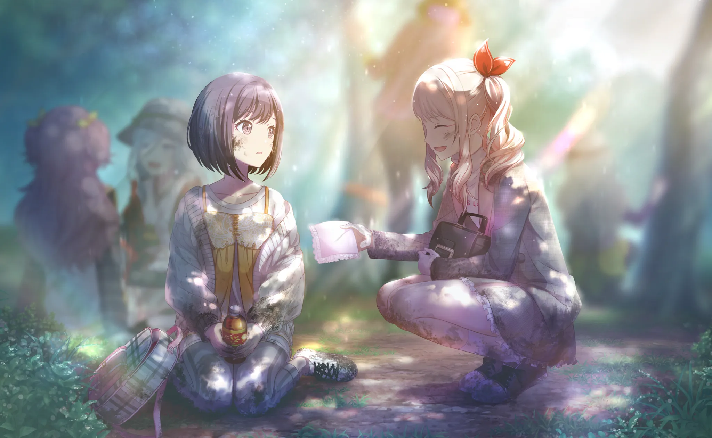
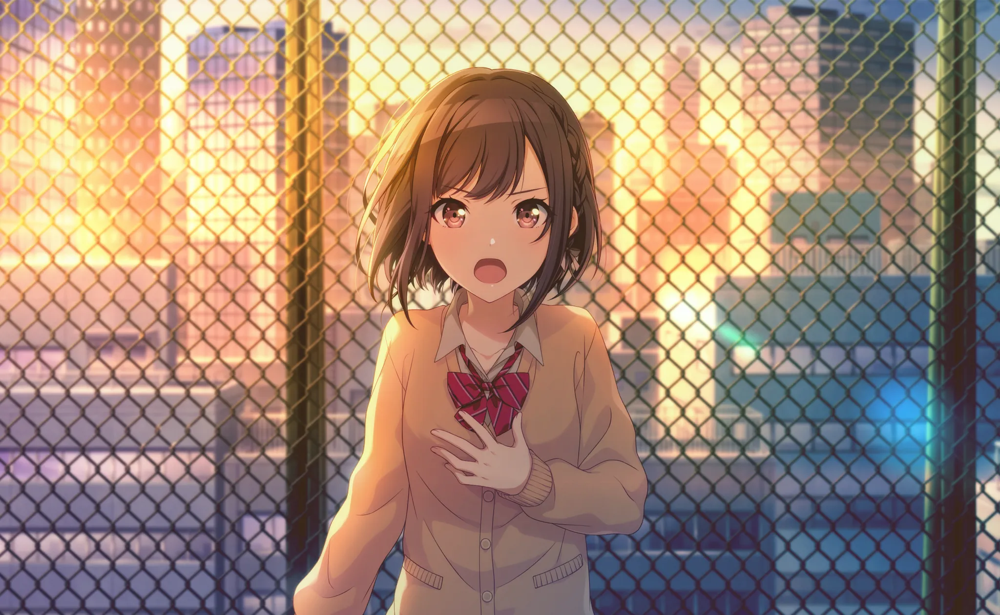
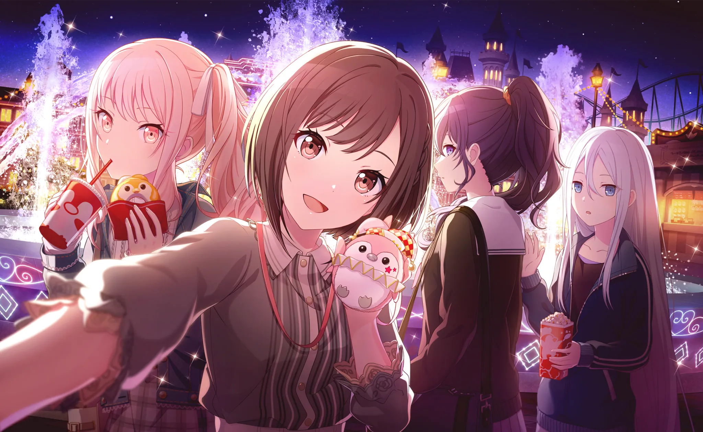
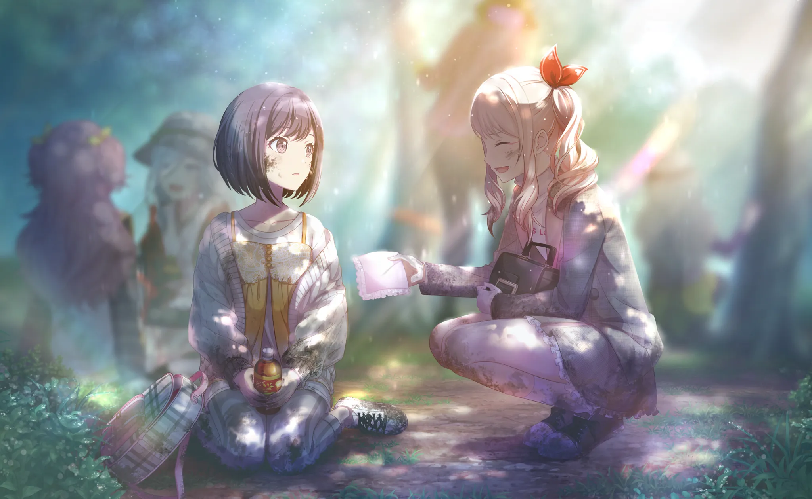
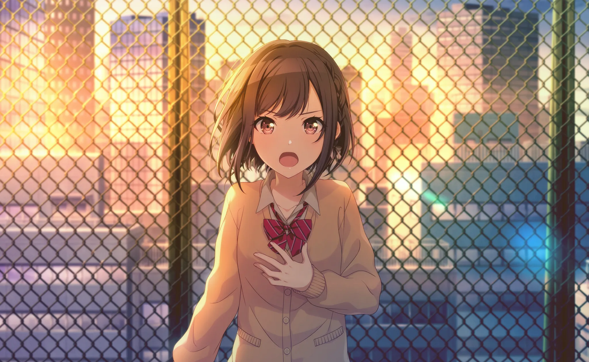
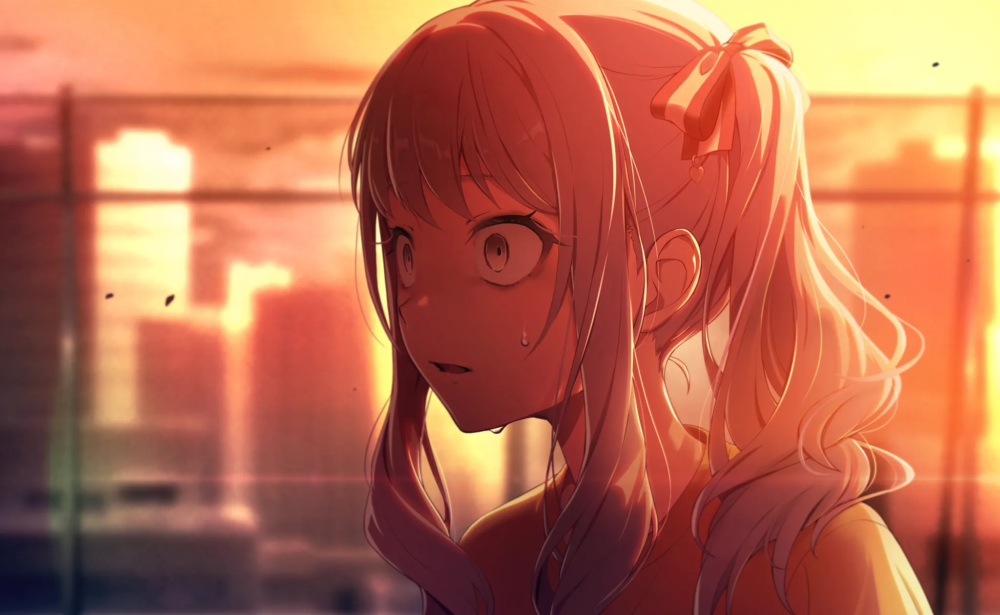

有关触发自我认识的事件的详细信息
“啊~累死我了~”
“确实，今天有庆功会，不知道是去还是不去啊。”
“我懂，有点懒得去啊。”
（在那里的是……全日制的学生？）
（……怎么办，有人在的话，还是换个地方好点吧……）
“说起来，刚刚在走廊里跑的人，是晓山吧？”
“啊——看着像是。”
“果然，那家伙别的不提的话还挺可爱的欸~”
（他们是在聊，瑞希的话题吗……）
（……不过……确实，脸长得很可爱呢。）
“……喂，还是别这么说了吧……”
“哎呀，你不这么觉得吗？”
“——嗯，有谁在那边？”
“……啊！你，是今天和晓山一起玩的那位吧？”
“……！”
（糟了，被搭话了。）
“啊……你好。嗯，姑且，是这么回事……”
“看吧，果然是吧！”
“喂，别突然上去缠着啊，会吓到她的吧。”
“反正文化节嘛没关系吧！——我说，没怎么见过你啊，你和晓山关系不错？”
“嗯……我们确实认识很久了。”
“诶，这样啊，啊，那——”
“你该不会也是个男的？”
“………………”
“…………啊？”
“喂，叫你别说了……！”
“怎么啦，开个玩笑嘛。哈哈哈，抱歉哦——”
“——这说的什么。”
“说是笑话，我可完全笑不出来。”
“诶呀，所以抱歉了嘛。我也觉得你确实是女生啦——”
“……什么意思？”
“呃……？”
“什么叫……我确实是……”
“喂，喂，难不成这个人真的不知……”
“……啧，所以我才叫你别说了！！”
“但……但是，她都说认识很久了，正常来想肯定以为早知道了吧！？”
“那家伙也没刻意隐瞒过嘛！！”
“诶…………”
（………………不是在开玩笑……？）
（诶…………诶…………？）
（……那——）
（那——）
（瑞希想和我，说的话是——）
“啊……！！”
“啊…………！？”

“…………啊…………”

 





"…………啊……啊…………"

“…………啊！！”
“等等——瑞希！”
“瑞希！！！”
来自于Project sekai mzk5 第七话